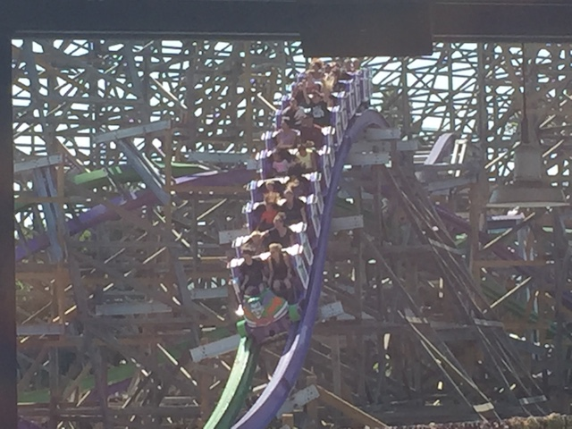
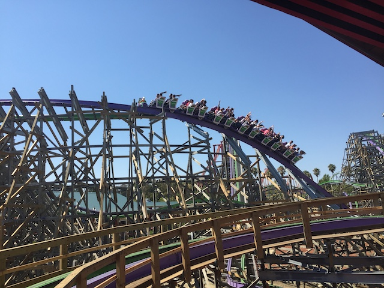
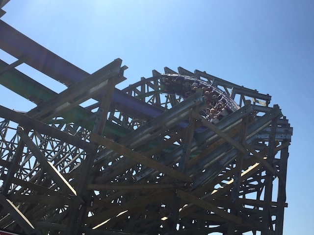
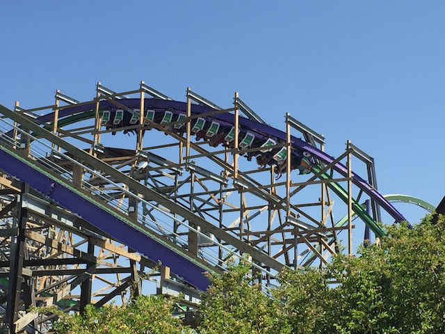
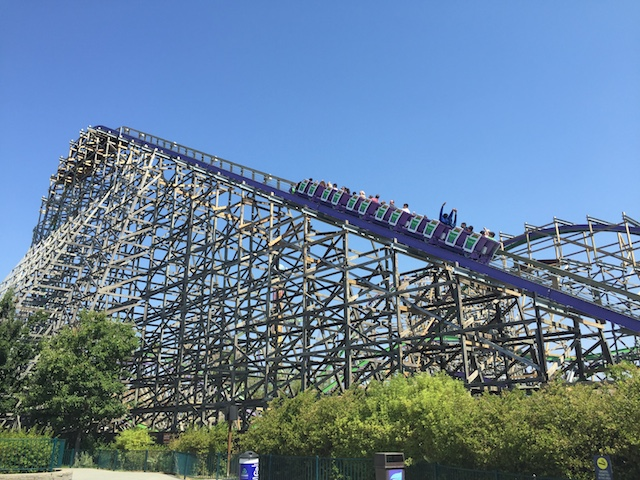
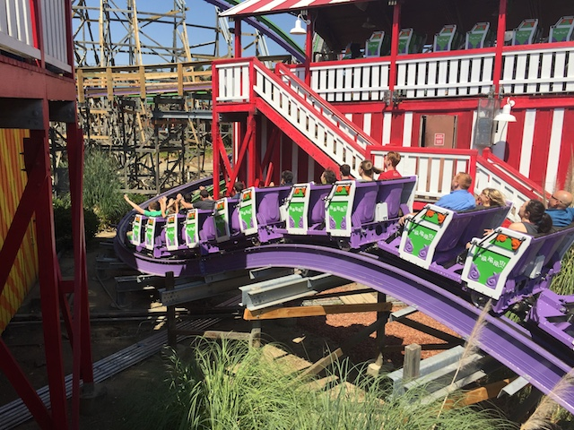
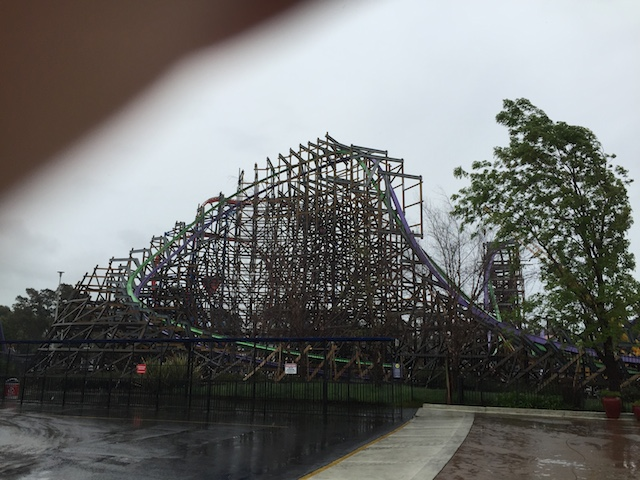
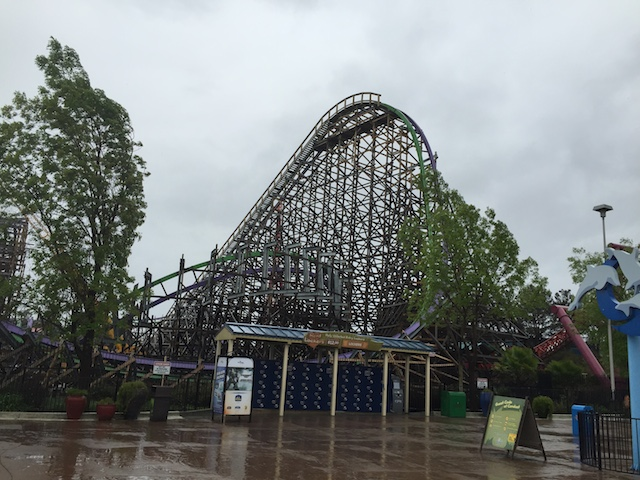

| |
Joker Review

Today at Incrediblecoasters, we're going to be reviewing Joker at Six Flags Discovory Kingdom. Now this is a Rocky Mountain Makeover, where they take an old busted sh*tty wooden coaster and turn it into a kickass crazy steel coaster. Now, I had...mixed feelings as for how Roar was. It was a decent GCI and I liked it fine. But last time I rode it, I sort of forgot I was riding it. But whatever. Joker is just so much better, so it really doesn't matter. Because these RMCs are just amazing rides. I know Joker is the weakest one. But hey. All the RMCs are great rides. I love them all. All right. So let's get in the cars, buckle the seatbelts, pull down the lap bar, and off we go. We go around a turn that's actually a small curved drop. Wee!! Then we head into some tiny little bumps. They're kind of like Wacky Worm bumps. But there's something about them. Yeah. We actually have a little bit of speed, and there is some actual airtime on those tiny little bumps. Leave it to RMC to make their prelifts fun and intersting. =) Anyways, we then head on up the lifthill. We look around and get a great view of all of the other good rides at Six Flags Discovory Kingdom, like Superman: Ultimate Flight, Medusa, and especially V2 from the top. But yeah. We've reached the top since Joker is definetly smaller than the other RMCs. Now the first drop on Joker is actually really good. It's a twisty spiral first drop that while it's not 90 degrees, it's really damn steep. Like 80-85 degrees. And in the backseat, it's great. There's some really great ejector air in the back mixed with the laterals, and it provides just a great combination. Hell, in a way, the first drop on Joker kind of reminds me of the drops on Expedition Ge Force and Xcelerator. It's a GREAT first drop. Joker then heads into...this funky inversion. I'm not sure what it's called. I don't even think it's been done before. I think RMC just sort of invented it for the Joker. It starts out like a Dive Loop, sort of. Not really. It flips upsidedown like a Top Gun Stall, or a Zero G Roll. So yeah. We're upsidedown. But then it sort of heads out as if it were an Immelmann Loop. Only, it's sort of just twisting to the ground in a spiral drop. It's funky and a lot of fun. I really enjoyed it. And speaking of more fun RMC inversions, we then head into a Top Gun Stall, or a sort of Zero G Stall. But yeah. We head into a big hill, and flip upsidedown, so you're riding out the hill upsidedown, and unlike in most inversions, you really feel like you're upsidedown right here. Just a little bit of the charm that RMCs have. We then bank and head into an outward banked hill. And yeah. That's always something fun. And hey, there's even a little bit of airtime. Not a ton, but I enjoy my outward banked airtime hills. We then head back to normal, and go through another wave element. Yeah, it's not the most intense thing ever, but it's still a ton of fun. Plus, you get some good laterals during that wave element. And it's always fun whenever its 90 degrees. We then head up a small hill before heading on down to the ground. Sadly, there's not a ton of airtime here. A little, but not much. Especially compared to what's coming up. So yeah. That's the breather moment of the ride. We then head through another tiny little hill that's generally a lot of fun and has some decent airtime. We then head around a low to the turn ground that looks like it should be a lot of fun. And it's fun, just not as crazy or intense as I would've hoped. But hey. We head into another airtime hill, and it's pretty good. Seriously, there's a really nice pop of ejector airtime here. Well, actually, it's a double hill. Head up a hill, dip back down a little, dip back up, and drop to the ground. And there's some nice ejector air here. Seriously, that double hill may possibly be my favorite part of the ride. We then head around another low to the ground turn and through another wave, this one is a little than the first one. You know, what? We haven't had an inversion in a while. BAM!!! BARREL ROLL!!! It's got a little bit of whip. It's low to the ground, and it's fun. We of course, head around another turn leading us straight into another airtime hill. Nice little pop of ejector air. Love that. We then head up a small hill, get some airtime and a little bit of laterals while we're at it since we go around a slight turn as we head off the hill. But unfortunetly, that just leads us to gliding into the brake run. I know some people didn't really care for all the laterals in the ride and the slower speeds thanks to them having to abide to the stupid height restriction Six Flags Discovory Kingdom has, even if that gave us V2 as we currently know it. But you know what? I like those laterals. They're a lot of fun. And Joker is fun. It may not have been as agressive as it was opening year, and that's dissapointing. But it's still fun. It does maintain its speed, it has some good laterals, fun inversions, and some decent ejector air. I know some did complain of it being slow, but others said that those were just the wheels and that it was having a bad day. Well, it's been having more of those recently. Really hoping my next few Joker rides are much better. Nonetheless, Joker is still a lot of fun. Definetly give it a ride if at Six Flags Discovory Kingdom. You will enjoy it.
8/10
Location: Six Flags Discovory Kingdom
Opened: 2016
Built by: Rocky Mountain Coasters
Last Ridden: November 3, 2019
Joker Photos











Home
|